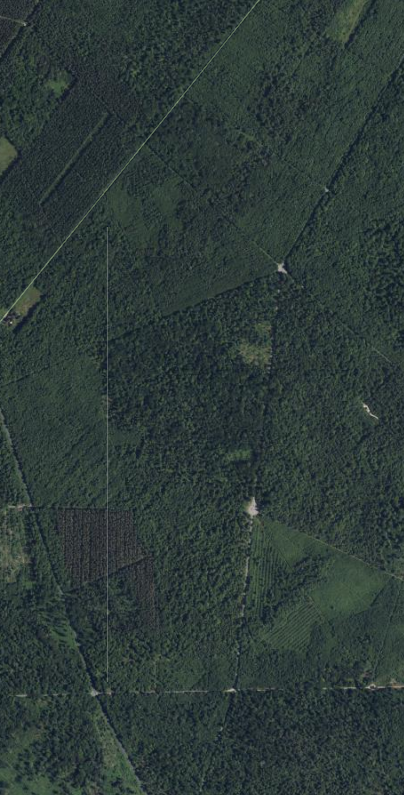

◎
Forêt de Compiègne
EN DIRECT
Badge
B
W
R
La forêt de Compiègne, en mieux.
Essaie gratuitement →
bwrmaps.com · gratuit
B
W
R
▶ Lancer le reel
Musique incluse 🎵 — monte le volume. Plein écran conseillé pour enregistrer.
1 · Arbre en travers
2 · Tourner en rond
3 · C'est encore loin ?
4 · Chemin galère
5 · Zéro réseau
↻ Rejouer
⛶ Plein écran
⏺ Enregistrer la vidéo
Série « problème → solution » : une vraie photo de forêt pose le problème,
ta vraie carte BWR
le règle. 5 variantes (menu déroulant). Marimba douce. Format 9:16, ~16 s.